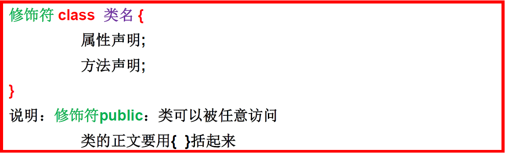

课程：宋红康 JAVA
面向对象和面向过程
面向过程：POP: Process-Oriented Programming
以函数（方法）为最小单位
数据独立于函数之外
以过程，步骤为主，考虑怎么做
面向对象：OOP: Object Oriented Programming
以类/对象为最小单位，类包括：数据+方法
以对象（谁）为主，考虑谁来做，谁能做
面向对象的语言中，包含了三大基本特征，即封装、继承和多态。
类和对象
类和对象
- 类是对一类事物的描述，是抽象的、概念_上的定义
- 对象是实际存在的该类事物的每个个体，因而也称为实例(instance)。
类的语法格式
- 属性和方法是类的常见成员
- 属性=Field=成员变量
- 方法=Method=成员方法=函数
对象的创建
- 创建类的对象 = 类的实例化 = 实例化类
- 创建类的语法：类名 对象名 = new 类名（）
访问对象成员（属性和方法）：
- 格式：对象名.对象成员名 —> 对象名.属性名 & 对象名.方法名
- 类的访问机制
- 在一个类中的访问机制：类中的方法可以直接访问类中的成员变量。(例外: static 方 法访问非 static,编译不通过。)
- 在不同类中的访问机制：先创建要访问类的对象，再用对象访问类中定义的成员。
匿名对象：new 类名（）—–>没有声明对象
对象的内存解析

区域名称 作用 程序计数器 程序计数器是 CPU 中的寄存器，它包含每一个线程下一条要执行的指令的地址 本地方法栈 当程序中调用了 native 的本地方法时，本地方法执行期间的内存区域 方法区 存储已被虚拟机加载的类信息、常量、静态变量、即时编译器编译后的代码等数据。 堆内存 存储对象（包括数组对象），new 来创建的，都存储在堆内存。 虚拟机栈 用于存储正在执行的每个Java 方法的局部变量表等。局部变量表存放了编译期可知长度的各种基本数据类型、对象引用，方法执行完，自动释放。 - 和之前讲的数组的类似
- new 会在堆空间中开辟内存空间，用于存放成员变量（属性）的数据
- Person p1 对象的声明放在栈空间中，用于存放地址值
- 对象名.属性名 ：用于调取属性，还可以给他们赋值
- “tom”字符串是在方法区，不是在堆空间，这里画上去是为了方便理解
- 每 new 一个对象，就开辟了一个内存空间
- Person p3 = p1 并没有创立新的对象，而是把对象的地址值给了 p3
类的成员：属性、方法和构造器
属性
语法格式：修饰符 数据类型 属性名 = 初始化值
常用的权限修饰符有：private、 缺省、protected、 public
其他修饰符: static、 final
数据类型：任何基本数据类型(如 int、Boolean)或任何引用数据类型（Person）
属性名：属于标识符，符合命名规则和规范即可。
初始化值
数据类型 默认值 基本类型 整数（byte，short，int，long） 0 浮点数（float，double） 0.0 字符（char） 0 或’\u0000’ 布尔（boolean） false 引用类型 数组，类，接口 null
成员变量（属性）与局部变量
相同点：
- 定义变量的格式：数据类型 变量名 = 变量值
- 先声明，后使用
- 变量都有其对应的作用域
不同点
在类中声明的位置的不同
属性：直接定义在**类的一对{ }**内
局部变量：声明在方法内、方法形参、代码块内、构造器形参、构造器内部的变量
关于权限修饰符的不同
可以在声明属性时，指明其权限，使用权限修饰符。用的权限修饰符：private、public、缺省、protected
局部变量：不可以使用权限修饰符
默认初始化值的情况：
属性：类的属性，根据其类型，都有默认初始化值。
局部变量：没有默认初始化值。意味着，我们在调用局部变量之前，一定要显式赋值。特别地：形参在调用时，我们赋值即可。
在内存中加载的位置：
属性：加载到堆空间中 （非 static）
局部变量：加载到栈空间
方法
方法是声明格式
【修饰符】 返回值类型 方法名(【形参列表：参数类型1 参数名1,参数类型2 参数名, ...... 】){ 方法体； 【return 返回值;】 }return 返回值:方法在执行完毕后返还给调用它的程序的数据。
- return 使用范围：使用在方法体中
- 作用：① 结束方法； ② 针对于有返回值类型的方法，使用”return 数据”方法返回所要的数据。
方法的调用：
- 不同类中：对象名.方法名
- 同一个类中：直接调用该类的属性和方法
可变形参方法
- 可变个数形参的格式：数据类型…. 变量名
- 当调用可变个数形参的方法时，传入的参数个数可以是: 0 个，1 个，2 个……
- 可变个数形参的方法与本类中方法名相同,形参不同的方法之间构成重载
- 可变个数形参的方法与本类中方法名相同，形参类型也相同的数組之间不构成重载。换句话说，二者不能共存。
- 可变个数形参在方法的形参中,必须声明在末尾
- 可变个数形参在方法的形参中,最多只能声明一个可变形参。
class Student2 { public void getSum(int ... arg){ // 传入的其实就是一个数组 System.out.println(arg[0]); System.out.println(arg.length); System.out.println(Arrays.toString(arg)); } public static void main(String[] args) { Student2 student2 = new Student2(); student2.getSum(1,3,5,1,9,9); } //'getSum(int[])' is already defined in 'xxxxx ' // public void getSum(int[] arg){ // // } public void getSum(String j,int ... arg){ } // 这么写也可以，但是在实际调用的时候编译会报错student2.getSum(1,3,5,1,9,9); // Ambiguous method call. Both // 分不清是调用：getSum(int j,int ... arg) // 还是调用 getSum(String j,int ... arg) // public void getSum(int j,int ... arg){ // // } // 编译报错：Vararg parameter must be the last in the list // public void getSum(int ... arg,boolean a){ // // } }方法的值传递机制：给形参赋值
引入：关于变量的赋值
如果变量是基本数据类型，此时赋值的是变量所保存的数据值。
如果变量是引用数据类型，此时赋值的是变量所保存的数据的地址值。
方法的形参的传递机制：值传递
区分实参与形参
- 形参：方法定义时，声明的小括号内的参数
- 实参：方法调用时，实际传递给形参的数据
问题引入案例：实参为基本数据类型
最后发现结果又变回来了，这是为什么呢？
【画内存图解释说明】

- 首先 m 和 n 都是局部变量，都加载到栈空间
- 我们执行 main 方法时，会在栈空间加载 m 和 n，m=10，n=20
- 当我们执行 swap 方法时，又会在栈空间加载 m 和 n，还一个 temp 变量
- 因为是基本数据类型，所有当我们传入实参时，会把值直接赋给变量，所有 swap 的值是 m=10，n=20
- 经过 swap 的方法，里面的值变为 m = 20, n = 10，然后打印出来
- 方法执行完之后，swap 里面的变量都出栈，被垃圾回收器回收
- 在这个过程中，main 方法的 m 和 n 是一点变化也没有的
- 最后打印出 m 和 n
问题引入案例：传入是引用数据类型，交换成功
【图解说明】
- 这主要是引用数据类型把数据存在堆空间中
- 在 main 方法中，new Data()，在堆空间中开辟了一个存储空间（0x7788）
- 然后把地址值赋给声明在 main 方法中的 data
- 然后调用 swap，传入 data 的地址值传到 swap 方法声明的 data 里面，栈空间中的两个 data 公用一个地址值
- 通过 swap 方法，完成交换，交换的是堆空间里面的值
- swap 方法执行结束，被垃圾回收器回收
- 最后 main 方法打印出来，交换成功
结论：
- 如果参数是基本数据类型，此时实参赋给形参的是实参真实存储的数据值。
- 果参数是引用数据类型，此时实参赋给形参的是实参存储数据的地址值。
构造器
构造器的作用：① 创建对象；② 给对象进行初始化
代码：
/* 【修饰符】 构造器名(){ // 实例初始化代码 } 【修饰符】 构造器名(参数列表){ // 实例初始化代码 } * * */ public class Student { private String name; private int age; // 无参构造 public Student() {} // 有参构造 public Student(String name,int age) { this.name = name; this.age = age; } public String getName() { return name; } public void setName(String name) { this.name = name; } public int getAge() { return age; } public void setAge(int age) { this.age = age; } }构造器的特征
- 与类相同的名称
- 它不声明返回值类型。(与声明为 void 不同)
- 不能被 static、final、 synchronized、 abstract、 native 修饰， 不能有 return 语句返回值
注意：
- 如果没有显式的定义类的构造器的话，则系统默认提供一个空参的构造器
- 一个类中定义的多个构造器，彼此构成重载
- 一旦我们显式的定义了类的构造器之后，系统就不再提供默认的空参构造器
属性赋值的先后顺序
① 默认初始化
② 显式初始化
③ 构造器中初始化
④ 通过”对象.方法” 或 “对象.属性”的方式，赋值
以上操作的先后顺序：① - ② - ③ - ④
OOP 特征之一：封装与隐藏
封装（Encapsulation）是面向对象方法的重要原则，就是把对象的属性和操作（或服务）结合为一个独立的整体，并尽可能隐藏对象的内部实现细节。
- 将类的某些信息隐藏在类的内部，不允许外部程序进行直接的访问调用。
- 通过该类提供的方法来实现对隐藏信息的操作和访问。
- 隐藏对象的信息。
- 留出访问的对外接口
封装性的体现：
- 我们将类的属性 xxx 私有化(private),同时，提供公共的(public)方法来获取(getXxx)和设置(setXxx)此属性的值
- 不对外暴露的私有的方法
- 单例模式
Java 提供了 4 种权限修饰符来修饰类及类的内部结构，体现类及类的内部结构在被调用时的可见性的大小。
Java 规定的 4 种权限（从小到大排列）：private、缺省、protected 、public
public class Chinese {
private static String country;
private String name;
private int age;
private boolean marry;
public static void setCountry(String c){
country = c;
}
public static String getCountry(){
return country;
}
public void setName(String n) {
name = n;
}
public String getName() {
return name;
}
public void setAge(int a) {
age = a;
}
public int getAge() {
return age;
}
public void setMarry(boolean m){
marry = m;
}
public boolean isMarry(){
return marry;
}
}
四种访问权限修饰符
Java 权限修饰符public/protected/缺省/private置于类的成员定义前，用来限定对象对该类成员的访问权限。
对于 class 的权限修饰只可以用 public 和 default(缺省)。
- public 类可以在任意地方被访问
- default 类只可以被同一个包内部的类访问。
关键字: this, import, package
关键字 this
this 可以用来修饰/调用：属性、方法、构造器。this 理解为：当前对象 或 当前正在创建的对象
我们可以使用”this.属性”或”this.方法”的方式，调用当前对象属性或方法。但是，通常情况下，我们都选择省略”this.”。特殊情况下，如果方法的形参和类的属性同名时，我们必须显式的使用”this.变量”的方式，表明此变量是属性，而非形参。
我们可以使用”this.属性”或”this.方法”的方式，调用当前正在创建的对象属性或方法。但是，通常情况下，我们都选择省略”this.”。特殊情况下，如果构造器的形参和类的属性同名时，我们必须显式的使用”this.变量”的方式，表明此变量是属性，而非形参。
class Person{
private String name;
private int age;
public Person(){
String info = "Person初始化时，需要考虑如下的1,2,3,4...(共40行代码)";
System.out.println(info);
}
//在构造其中使用this，调用属性，属性名相同，不可省略
public Person(String name){
//this()是在调用Person里面的无参构造器
this();
this.name = name;
}
//在构造其中使用this，调用属性，属性名相同，不可省略
public Person(int age){
//this()是在调用Person里面的无参构造器
this();
this.age = age;
}
//在构造其中使用this，调用属性，属性名相同，不可省略
public Person(String name,int age){
this(age);
//this(name):这里会报错，因为this必须在首行
this.name = name;
//this.age = age;
}
//在方法中，不可省略
public void setName(String name){
//this();这里会报错，因为不能在方法里面使用this()的构造器
this.name = name;
}
//在方法中，可省略
public String getName(){
//return this.name;这里是可以省略this的
return name;
}
//在方法中，不可省略
public void setAge(int age){
//如果我们省略this：age=age;
//这个时候形参里面的int age和属性里面的private int age同名了，无法区别
//this.age相等于person.age
this.age = age;
}
//在方法中，可省略
public int getAge(){
//return this.age;这里是可以省略this的
return age;
}
public void eat(){
System.out.println("人吃饭");
//这里就可以省略this，this.study();
study();
}
public void study(){
System.out.println("人学习");
}
}
public class PersonTest {
public static void main(String[] args) {
Person p1 = new Person();
p1.setAge(1);
System.out.println(p1.getAge());
p1.eat();
System.out.println();
Person p2 = new Person("Jerry",20);
System.out.println(p2.getAge());
}
}
关键字 package 和 import
- package 的使用
- 包（package）的作用：为了更好的实现项目中类的管理，提供包的概念
- 包帮助管理大型软件系统:将功能相近的类划分到同一个包中。比如: MVC 的设计模式
- 包可以包含类和子包，划分项目层次，便于管理
- 解决类命名冲突的问题
- 控制访问权限
- 使用 package 声明类或接口所属的包，声明在源文件的首行
- 包属于标识符，遵循标识符的命名规则、规范(xxxyyyzzz)、“见名知意”
- 包（package）的作用：为了更好的实现项目中类的管理，提供包的概念
- import（导入）的使用
- 作用：在源文件中显式的使用 import 结构导入指定包下的类、接口
- 声明在包的声明和类的声明之间
- 如果需要导入多个结构，则并列写出即可
- 可以使用”xxx.*“的方式，表示可以导入 xxx 包下的所有结构
- 如果使用的类或接口是 java.lang 包下定义的，则可以省略 import 结构
- 如果使用的类或接口是本包下定义的，则可以省略 import 结构
- 如果在源文件中，使用了不同包下的同名的类，则必须至少有一个类需要以全类名的方式显示。
- 使用”xxx.*“方式表明可以调用 xxx 包下的所有结构。但是如果使用的是 xxx 子包下的结构，则仍需要显式导入
- import static:导入指定类或接口中的静态结构:属性或方法。
OOP 特征之二：继承性
继承性的格式：
class A extends B{ }- A:子类、派生类、subclass
- B:父类、超类、基类、superclass
- 一旦子类 A 继承父类 B 以后，子类 A 中就获取了父类 B 中声明的所有的属性和方法。子类继承父类的属性，是子类拥有与父类同名同类型的属性，不是子类公用父类的属性。
Java 中关于继承性的规定：
- 一个类可以被多个子类继承。
- Java 中类的单继承性：一个类只能有一个父类
- 子父类是相对的概念。
- 子类直接继承的父类，称为：直接父类。间接继承的父类称为：间接父类
- 子类继承父类以后，就获取了直接父类以及所有间接父类中声明的属性和方法
- 如果我们没有显式的声明一个类的父类的话，则此类继承于
java.lang.Object类。 - 所有的 java 类（除
java.lang.Object类之外）都直接或间接的继承于java.lang.Object类。意味着，所有的 java 类具有java.lang.Object类声明的功能。
代码
public class ExtendsTest { public static void main(String[] args) { Person p1 = new Person(); // p1.age = 1; p1.eat(); System.out.println("*****************"); Student s1 = new Student(); s1.eat(); // s1.sleep(); s1.name = "Tom"; s1.setAge(10); System.out.println(s1.getAge()); s1.breath(); Creature c = new Creature(); System.out.println(c.toString()); } } public class Creature { public void breath(){ System.out.println("呼吸"); } } public class Person extends Creature{ String name; private int age; public Person(){ } public Person(String name,int age){ this.name = name; this.age = age; } public void eat(){ System.out.println("吃饭"); sleep(); } private void sleep(){ System.out.println("睡觉"); } public int getAge() { return age; } public void setAge(int age) { this.age = age; } } public class Student extends Person{ // String name; // int age; String major; public Student(){ } public Student(String name,int age,String major){ this.name = name; // this.age = age; setAge(age); this.major = major; } // public void eat(){ // System.out.println("吃饭"); // } // public void sleep(){ // System.out.println("睡觉"); // } public void study(){ System.out.println("学习"); } public void show(){ System.out.println("name:" + name + ",age:" + getAge()); } }
方法的重写与重载
方法的重载（overload）———–>同类同名不同参
参数列表不同: 参数个数、参数类型、参数顺序
方法名相同
public class Student { public void getSum(int i,int j){ System.out.println(i+j); } // 个数不同 public void getSum(int i,int j,int y){ System.out.println(i+j+j); } //类型不同 public void getSum(String i,int j){ System.out.println(i+j); } //顺序不同 public void getSum( int j,String i){ System.out.println(i+j); } }方法的重写(overwrite) ———–> 同名同参不同类
定义：在子类中可以根据需要对从父类中继承来的方法进行改造，也称为方法的重置、覆盖。在程序执行时，子类的方法将覆盖父类的方法。
重写的规定：
- 子类重写的方法的方法名和形参列表与父类被重写的方法的方法名和形参列表相同
- 子类重写的方法的权限修饰符不小于父类被重写的方法的权限修饰符
- 特殊情况：子类不能重写父类中声明为private权限的方法
- 返回值类型：
- 父类被重写的方法的返回值类型是 void，则子类重写的方法的返回值类型只能是 void
- 父类被重写的方法的返回值类型是A 类型，则子类重写的方法的返回值类型可以是A 类或 A 类的子类
- 父类被重写的方法的返回值类型是基本数据类型(比如：double)，则子类重写的方法的返回值类型必须是相同的基本数据类型(必须也是 double)
- 子类重写的方法抛出的异常类型不大于父类被重写的方法抛出的异常类型
- 子类和父类中的同名同参数的方法要么都声明为非 static 的（考虑重写），要么都声明为 static 的（不是重写）。
public class Person { String name; int age; public Person(){ } public Person(String name,int age){ this.name = name; this.age = age; } void eat(){ System.out.println("吃饭"); } public void walk(int distance){ System.out.println("走路,走的距离是：" + distance + "公里"); show(); eat(); } private void show(){ System.out.println("我是一个人"); } public Object info(){ return null; } public double info1(){ return 1.0; } } public class Student extends Person{ String major; public Student(){ } public Student(String major){ this.major = major; } public void study(){ System.out.println("学习。专业是：" + major); } //对父类中的eat()进行了重写 public void eat(){ System.out.println("学生应该多吃有营养的食物"); } public void show(){ System.out.println("我是一个学生"); } public String info(){ return null; } // public int info1(){ // return 1; // } // public void walk(int distance){ // System.out.println("重写的方法"); // } public void walk(int distance) { System.out.println("重写的方法"); } } public class PersonTest { public static void main(String[] args) { Student s = new Student("计算机科学与技术"); s.eat(); s.walk(10); System.out.println("**************"); s.study(); Person p1 = new Person(); p1.eat(); } }
关键字:super 与子类对象实例化过程
super 关键字
super 理解为：父类的
super 的使用：调（自己的）用属性和方法
- 我们可以在子类的方法或构造器中。通过使用”super.属性“或”super.方法“的方式，显式的调用父类中声明的属性或方法。但是，通常情况下，我们习惯省略”super.”
- “super.属性”：表示我在用从父类中继承到的属性，是在用子类自己的属性，不是去调用父类中的属性。
- “super.方法”：表示我在用从父类中继承到的方法，是在用子类自己的方法，不是去调用父类中的方法。
- 特殊情况：当子类和父类中定义了同名的属性时，我们要想在子类中调用父类中声明的属性，则必须显式的
- 特殊情况：当子类重写了父类中的方法以后，我们想在子类的方法中调用父类中被重写的方法时，则必须显式的使用”super.方法”的方式，表明调用的是父类中被重写的方法。
super 调用构造器
- 我们可以在子类的构造器中显式的使用”super(形参列表)“的方式，调用父类中声明的指定的构造器
- “super(形参列表)”的使用，必须声明在子类构造器的首行！
- 我们在类的构造器中，针对于”this(形参列表)”或”super(形参列表)”只能二选一，不能同时出现
- 在构造器的首行，没有显式的声明”this(形参列表)”或”super(形参列表)”，则默认调用的是父类中空参的构造器：super()
- 在类的多个构造器中，**至少有一个类的构造器中使用了”super(形参列表)”**，调用父类中的构造器
代码
public class Person { private String name; private int age; private int id = 1001;//身份证号 public Person(){ System.out.println("我无处不在！"); } public Person(String name){ this.name = name; } public Person(String name,int age){ this(name); this.age = age; } public void eat(){ System.out.println("人：吃饭"); } public void walk(){ System.out.println("人：走路"); } public String getName() { return name; } public void setName(String name) { this.name = name; } public int getAge() { return age; } public void setAge(int age) { this.age = age; } public int getId() { return id; } public void setId(int id) { this.id = id; } } public class Student extends Person{ String major; int id = 1002;//学号 public Student(){ //super();//默认的 } public Student(String major){ // super();//默认的 this.major = major; } public Student(String name,int age,String major){ // this.name = name; // this.age = age; //如果父类中的属性都是private的， //我们就无法通过this去直接访问父类中的属性，给父类的属性赋值 super(name,age); this.major = major; } @Override public void eat() { System.out.println("学生：多吃有营养的食物"); } public void study(){ System.out.println("学生：学习知识"); this.eat(); super.eat(); walk(); } public void show(){ // //当没有private的时候，我们子可以直接调父类的属性 // System.out.println("name = " + name + ", age = " + age); // //但是对应同名的属性，需要显示的标明，用到的是父类的属性还是子类的属性 // System.out.println("id = " + this.id); // System.out.println("id = " + super.id); System.out.println("name = " + super.getName() + ", age = " + super.getAge()); System.out.println("id = " + this.id); System.out.println("id = " + super.getId()); } } public class SuperTest { public static void main(String[] args) { Student s = new Student(); s.show(); System.out.println(); s.study(); Student s1 = new Student("Tom", 21, "IT"); s1.show(); System.out.println("************"); Student s2 = new Student(); } }
子类对象实例化过程
从结果上来看：（继承性）
子类继承父类以后，就获取了父类中声明的属性或方法。
创建子类的对象，在堆空间中，就会加载所有父类中声明的属性。
从过程上来看：
当我们通过子类的构造器创建子类对象时，我们一定会直接或间接的调用其父类的构造器，进而调用父类的父类的构造器
直到调用了 java.lang.Object 类中空参的构造器为止。正因为加载过所有的父类的结构，所以才可以看到内存中有父类中的结构，子类对象才可以考虑进行调用。
明确：虽然创建子类对象时，调用了父类的构造器，但是自始至终就创建过一个对象，即为 new 的子类对象。
OOP 特征之三:多态性
对象的多态性：父类的引用指向子类的对象
多态的使用：虚拟方法调用
有了对象的多态性以后，我们在编译期，调用子父类同名同参数的方法时，只能调用父类中声明的方法，但在运行期，我们实际执行的是子类重写父类的方法。
多态性的使用前提：① 类的继承关系 ② 方法的重写（多态的目的就是调用子类中重写的方法）
对象的多态性，只适用于方法，不适用于属性
public class PersonTest { public static void main(String[] args) { Person p1 = new Person(); p1.eat();// 人：吃饭 Man man = new Man(); man.eat();// 男人多吃肉，长肌肉 man.age = 25; man.earnMoney();// 男人负责挣钱养家 //************************************************* System.out.println("*******************"); //对象的多态性：父类的引用指向子类的对象 Person p2 = new Man(); // Person p3 = new Woman(); //多态的使用：当调用子父类同名同参数的方法时，实际执行的是子类重写父类的方法 ---虚拟方法调用 p2.eat(); // 男人多吃肉，长肌肉 p2.walk();//男人霸气的走路 // p2.earnMoney(); System.out.println(p2.id);//1001 } } public class Man extends Person{ boolean isSmoking; int id = 1002; public void earnMoney(){ System.out.println("男人负责挣钱养家"); } public void eat(){ System.out.println("男人多吃肉，长肌肉"); } public void walk(){ System.out.println("男人霸气的走路"); } } public class Woman extends Person{ boolean isBeauty; public void goShopping(){ System.out.println("女人喜欢购物"); } public void eat(){ System.out.println("女人少吃，为了减肥"); } public void walk(){ System.out.println("女人窈窕的走路"); } }对于多态性作用的初步理解
public class AnimalTest { public static void main(String[] args) { AnimalTest test = new AnimalTest(); test.func(new Dog()); test.func(new Cat()); } public void func(Animal animal){//Animal animal = new Dog(); animal.eat(); animal.shout(); } } //如果没有多态性，我们还需要去重写下面这些这些方法， //而有多态性之后，我们在形参那里可以声明一个Animal animal //然后想使用调用那个类的同名方法，直接把对应的对象传入形参就可以了 //如Animal animal = new Dog()；Animal animal = new Cat(); // public void func(Dog dog){ // dog.eat(); // dog.shout(); // } // public void func(Cat cat){ // cat.eat(); // cat.shout(); // } } class Animal{ public void eat(){ System.out.println("动物：进食"); } public void shout(){ System.out.println("动物：叫"); } } class Dog extends Animal{ public void eat(){ System.out.println("狗吃骨头"); } public void shout(){ System.out.println("汪！汪！汪！"); } public void watchDoor(){ System.out.println("看门"); } } class Cat extends Animal{ public void eat(){ System.out.println("猫吃鱼"); } public void shout(){ System.out.println("喵！喵！喵！"); } }同样的例子还有：Object 里面的 equals 方法，里面就设计放了一个 Object 类，因为 Object 是所有类的父类，有了多态性，形参里面可以传入任何对象，就可以和所有的类进行比较了
多态是编译时行为还是运行时行为？运行时行为
class Animal { protected void eat() { System.out.println("animal eat food"); } } class Cat extends Animal { protected void eat() { System.out.println("cat eat fish"); } } class Dog extends Animal { public void eat() { System.out.println("Dog eat bone"); } } class Sheep extends Animal { public void eat() { System.out.println("Sheep eat grass"); } } public class InterviewTest { public static Animal getInstance(int key) { switch (key) { case 0: return new Cat (); case 1: return new Dog (); default: return new Sheep (); } } // 因为 new Random().nextInt(3)需要在编译时才能确定对象，所有证明是运行时行为，否则会报错 public static void main(String[] args) { // new Random().nextInt（n）：返回一个[0,n)之间数值为int类型的随机数 int key = new Random().nextInt(3); System.out.println(key); Animal animal = getInstance(key); animal.eat(); } }方法的重载与重写（从编译和运行的角度）
重载，是指允许存在多个同名方法，而这些方法的参数不同。编译器根据方法不同的参数表，对同名方法的名称做修饰。对于编译器而言，这些同名方法就成了不同的方法。它们的调用地址在编译期就绑定了。Java 的重载是可以包括父类和子类的，即子类可以重载父类的同名不同参数的方法。所以: 对于重载而言，在方法调用之前，编译器就已经确定了所要调用的方法，这称为“早绑定”或“静态绑定”
而对于多态，只有等到方法调用的那一-刻，解释运行器才会确定所要调用的具体方法，这称为“晚绑定”或“动态绑定”。
子类继承父类中方法重写和同名属性对多态的影响
- 若子类重写了父类方法，就意味着子类里定义的方法彻底覆盖了父类里的同名方法，系统将不可能把父类里的方法转移到子类中。
- 对于实例变量（属性）则不存在这样的现象，即使子类里定义了与父类完全相同的实例变量，这个实例变量依然不可能覆盖父类中定义的实例变量
向下转型与 instanceof
理解向下转型
向下转型和强制类型转换一样，都是通过强转符（）来实现的
向下转型在内存中的操作：
- 为什么在多态中，父类的引用不能调用子类的属性，明明子类的属性已经加载到了堆空间中。因为地址值包含两部分：类型@地址，
- 当我们用父类的声明调属性时，地址是：父类@地址，就只能用父类中的属性和方法。当我们强转成子类是，地址值就是：子类@地址，这时我们就可以用子类特有的属性和方法
向下转型的风险：因为多态是运行时的行为，当我把一个父类转换成一个子类的时候就存在风险，这个风险是，我们要转换的目标类型，未必就是子父类关系。如，
Person p = new Man()；Woman w = （Woman）p。Man 和 Woman 不是子父类关系，会强转失败，抛出异常：ClassCaseException（类型转换异常）对 Java 对象的强制类型转换称为造型
- 从子类到父类的类型转换可以自动进行
- 从父类到子类的类型转换必须通过造型(强制类型转换)实现
- 无继承关系的引用类型间的转换是非法的
面对向下转型的风险，我们需要引入一个关键字：instanceof
instanceof
- a instanceof A: 判断对象 a 是否是类 A 的实例（new 出来的）。如果是，返回 true；如果不是，返回 false。
- 使用情境：为了避免在向下转型时出现 ClassCastException 的异常，我们在向下转型之前，先
进行 instanceof 的判断，一旦返回 true，就进行向下转型。如果返回 false，不进行向下转型。 - 如果类 B 是类 A 的父类， a instanceof A 返回 true,则 a instanceof B 也返回 true.
Object 类的使用
概述
Object 类是所有 Java 类的根父类
如果在类的声明中未使用 extends 关键字指明其父类，则默认父类为 java.lang.Object 类
Object 类的主要结构
属性：无
构造器：只声明了一个空参的构造器
方法：
protected Object clone() ：克隆，复制一个方法（Creates and returns a copy of this object.）
/* 实现克隆的步骤： 1.实现Cloneable接口，重写clone()方法 2.调用 super.clone(); 这里的super 就是Object类 super.clone()： protected native Object clone() throws CloneNotSupportedException; 这里的native关键字表示：这个方法不是Java写的，是C写的 这里的clone是一种浅拷贝： 浅克隆:原对象和克隆对象不同,但对象内的成员引用相同 深克隆:原对象和克隆对象不同,且对象内的成员引用也不同 不同:不是同一个对象，所占内存地址不同 成员引用:类中为引用类型的成员 */ class Animal implements Cloneable{ private String name; public Animal() { super(); } public Animal(String name) { super(); this.name = name; } public String getName() { return name; } public void setName(String name) { this.name = name; } @Override public String toString() { return "Animal [name=" + name + "]"; } @Override protected Object clone() throws CloneNotSupportedException { // TODO Auto-generated method stub return super.clone(); } } //Object类的clone()的使用 public class CloneTest { public static void main(String[] args) { Animal a1 = new Animal("花花"); try { Animal a2 = (Animal) a1.clone(); System.out.println("原始对象：" + a1); a2.setName("毛毛"); System.out.println("clone之后的对象：" + a2); } catch (CloneNotSupportedException e) { e.printStackTrace(); } } }boolean equals(Object obj) :Indicates whether some other object is “equal to” this one
protected void finalize()：Called by the garbage collector on an object when garbage collection determines that there are no more references to the object.（垃圾回收，垃圾回收器自动调的方法，不要主动去调）
Class<?> getClass()：Returns the runtime class of this Object.
int hashCode() ：Returns a hash code value for the object.
void notify()：Wakes up a single thread that is waiting on this object’s monitor.
void notifyAll()：Wakes up all threads that are waiting on this object’s monitor.
String toString() ：Returns a string representation of the object.
wait() ：Causes the current thread to wait until another thread invokes the notify() method or the notifyAll() method for this object.
==操作符与 equals 方法
==
- 基本类型比较值:只要两个变量的值相等，即为 true。两个数据未必要是同一个类型。
- 引用类型比较引用(是否指向同一个对象):只有指向同一个对象时，==才返回 true。
- 用“==”进行比较时，符号两边的数据类型必须兼容(可自动转换的基本数据类型除外)，否则编译出错
equals
是一个方法，而非运算符
只能适用于引用数据类型
Object 类中 equals()的定义：
public boolean equals(Object obj) { return (this == obj); }说明：Object 类中定义的 equals()和==的作用是相同的：比较两个对象的地址值是否相同.即两个引用是否指向同一个对象实体
像 String、Date、File、包装类等都重写了 Object 类中的 equals()方法。重写以后，比较的不是两个引用的地址是否相同，而是比较两个对象的”实体内容”是否相同。
通常情况下，我们自定义的类如果使用 equals()的话，也通常是比较两个对象的”实体内容”是否相同。那么，我们就需要对 Object 类中的 equals()进行重写。重写的原则：比较两个对象的实体内容是否相同.
toString()
当我们输出一个对象的引用时，实际上就是调用当前对象的 toString()
Object 类中 toString()的定义：
public String toString() { return getClass().getName() + "@" + Integer.toHexString(hashCode()); }像 String、Date、File、包装类等都重写了 Object 类中的 toString()方法。使得在调用对象的 toString()时，返回”实体内容”信息
自定义类也可以重写 toString()方法，当调用此方法时，返回对象的”实体内容”
包装类的使用
针对八种基本数据类型定义相应的引用类型一包装类(封装类)
有了类的特点，就可以调用类中的方法，Java 才是真正的面向对象
包装类有哪些
基本数据类型、包装类和 String 之间的转换

基本数据类型和 String—>包装类：调用包装类的构造器
public void test1(){ int num1 = 10; Integer in1 = new Integer(num1); System.out.println(in1.toString()); Integer in2 = new Integer("123"); System.out.println(in2.toString()); //1、报异常，123abc不是一个纯数字的字符串 // Integer in3 = new Integer("123abc"); // System.out.println(in3.toString()); Float f1 = new Float(12.3f); Float f2 = new Float("12.3"); System.out.println(f1); System.out.println(f2); Boolean b1 = new Boolean(true); //2、忽略大小写 Boolean b2 = new Boolean("TrUe"); System.out.println(b2); //3、只要不是true，其他都是false Boolean b3 = new Boolean("true123"); System.out.println(b3);//false Order order = new Order(); System.out.println(order.isMale);//false //4、包装类是一个引用数据类型，默认值是null System.out.println(order.isFemale);//null } class Order{ boolean isMale; Boolean isFemale; }包装类—>基本数据类型:调用包装类 Xxx 的 xxxValue()
public void test2(){ Integer in1 = new Integer(12); int i1 = in1.intValue(); System.out.println(i1 + 1); Float f1 = new Float(12.3); float f2 = f1.floatValue(); System.out.println(f2 + 1); }JDK 5.0 新特性：自动装箱 与自动拆箱
public void test3(){ //基本数据类型-->包装类的对象 int num1 = 10; //这里并不是把一个int型的变量赋值给一个Object obj类型的变量：Object obj = num1 //这是因为自动装箱的原因，先把int变成Integer，在让 Object obj = Integer num1 method(num1);//10 //自动装箱：基本数据类型 --->包装类 int num2 = 10; Integer in1 = num2;//自动装箱 boolean b1 = true; Boolean b2 = b1;//自动装箱 //自动拆箱：包装类--->基本数据类型 System.out.println(in1.toString()); int num3 = in1;//自动拆箱 } public void method(Object obj){ System.out.println(obj); }基本数据类型、包装类—>String 类型：调用 String 重载的 valueOf(Xxx xxx)
@Test public void test4(){ int num1 = 10; //方式1：连接运算 String str1 = num1 + ""; //方式2：调用String的valueOf(Xxx xxx) float f1 = 12.3f; String str2 = String.valueOf(f1);//"12.3" Double d1 = new Double(12.4); String str3 = String.valueOf(d1); System.out.println(str2); System.out.println(str3);//"12.4" }String 类型 —>基本数据类型、包装类：调用包装类的 parseXxx(String s)
public void test5(){ String str1 = "123"; //错误的情况： //int num1 = (int)str1; //不能强转，没有子父类关系 //Integer in1 = (Integer)str1; //可能会报NumberFormatException int num2 = Integer.parseInt(str1); System.out.println(num2 + 1); //String str2 = "true";---->转成true String str2 = "true1";//转成false，子要字符串不是true，那就都是false boolean b1 = Boolean.parseBoolean(str2); System.out.println(b1); }
关键字：static
static:静态的
static 可以用来修饰：属性、方法、代码块、内部类
使用 static 修饰属性：静态变量（或类变量）
属性按是否使用 static 修饰，又分为：静态属性 vs 非静态属性(实例变量)
- 实例变量：我们创建了类的多个对象，每个对象都独立的拥有一套类中的非静态属性。当修改其中一个对象中的非静态属性时，不会导致其他对象中同样的属性值的修改。
- 静态变量：我们创建了类的多个对象，多个对象共享同一个静态变量。当通过某一个对象修改静态变量时，会导致 其他对象调用此静态变量时，是修改过了的。
static 修饰属性的其他说明：
- 静态变量随着类的加载而加载。可以通过”类.静态变量“的方式进行调用
- 由于类的加载早于对象的创建，因此静态变量的加载要早于对象的创建。
- 由于类只会加载一次，则静态变量在内存中也只会存在一份：存在方法区的静态域中。
- 类和对象对变量的调用情况
类变量 实例变量 类 yes no 对象 yes yes
静态属性举例：System.out; Math.PI
类变量与实例变量的内存解析
- 栈空间中存放局部变量
- 堆空间中存放 new 出来的结构：对象，数组
- 方法区：类的加载信息、静态域和常量池
- 静态变量随着类的加载而加载，首先在创建对象之前，类的信息会加载到方法区里面，与此同时静态变量也会加载带方法区里面静态域里面
- 接着**Chinese.nation=”中国”**把 nation 的 null 改成了中国
- 后面我们 new 对象，在堆空间中开辟了两个空间，存放成员变量：name 和 age。把地址值别赋给 c1 和 c2
- 这里的 name 是 String 类型的，里面存放的也是地址值，指向常量池
- 后面 c1 和 c2 分别调用方法，把“中国”—>“CHN”—>“CHINA”
使用 static 修饰方法：静态方法（类方法 class method）
- 因为静态方法随着类的加载而加载，可以通过”**类.静态方法”**的方式进行调用
- 类和对象对方法的调用情况
静态方法 非静态方法 类 yes no 对象 yes yes 静态方法中，只能调用静态的方法或属性
因为生命周期是一致的，类先加载出来，而对象都还没创建，没办法调对象的属性和方法
非静态方法中，既可以调用非静态的方法或属性，也可以调用静态的方法或属性
static 注意点：
- 在静态的方法内，不能使用 this 关键字、super 关键字。this 和 super 都是基于有当前对象才能使用，静态方法加载好时，对象还没创建出来
- 关于静态属性和静态方法的使用，大家都从生命周期的角度去理解。
static 与单例（singleton）设计模式
单例模式的概念：
所谓类的单例设计模式，就是采取一定的方法保证在整个的软件系统中，对某个类只能存在一个对象实例，并且该类只提供一个取得其对象实例的方法。如果我们要让类在一个虚拟机中只能产生一个对象，我们首先必须将类的构造器的访问权限设置为 private，这样，就不能用 new 操作符在类的外部产生类的对象了，但在类内部仍可以产生该类的对象。因为在类的外部开始还无法得到类的对象，只能调用该类的某个静态方法以返回类内部创建的对象，静态方法只能访问类中的静态成员变量，所以，指向类内部产生的该类对象的变量也必须定义成静态的。
饿汉模式：在初始化的时候就已经创建了对象
public class SingletonTest1 { public static void main(String[] args) { Bank bank1 = Bank.getInstance(); Bank bank2 = Bank.getInstance(); System.out.println(bank1 == bank2);//打印true:同一个对象 } } //饿汉式 class Bank{ //1.私有化类的构造器 private Bank(){ } //2.内部创建类的对象 //4.要求此对象也必须声明为静态的 private static Bank instance = new Bank(); //3.提供公共的静态的方法，返回类的对象 public static Bank getInstance(){ return instance; } }懒汉模式：在需要的时候创建对象
public class SingletonTest2 { public static void main(String[] args) { Order order1 = Order.getInstance(); Order order2 = Order.getInstance(); System.out.println(order1 == order2);//打印true:同一个对象 } } class Order{ //1.私有化类的构造器 private Order(){ } //2.声明当前类对象，没有初始化 //4.此对象也必须声明为static的 private static Order instance = null; //3.声明public、static的返回当前类对象的方法 public static Order getInstance(){ if(instance == null){ /*这里线程不安全，为什么？*/ /*这里会发生线程阻塞*/ /*如果线程1先进入if语句; 这时被阻塞住，然后,还没来得及创建instance, 然后线程2也可以进入。 线程1和线程2就创建了两个不同的实例*/ instance = new Order(); } return instance; } }饿汉式和懒汉式的优缺点
饿汉式：
- 好处：饿汉式是线程安全的
- 坏处：对象加载时间过长。
懒汉式
- 好处：延迟对象的创建
- 坏处：目前的写法坏处：线程不安全。—>到多线程内容时，再修改
单例模式的优点
由于单例模式只生成一个实例，减少了系统性能开销，当一个对象的产生需要比较多的资源时，如读取配置、产生其他依赖对象时，则可以通过在应用启动时直接产生一个单例对象，然后永久驻留内存的方式来解决。
单例模式的应用场景
- 网站的计数器，一般也是单例模式实现，否则难以同步。
- 应用程序的日志应用，一般都使用单例模式实现，这一般是由于共享的日志文件一直处于打开状态，因为只能有一个实例去操作，否则内容不好追加。
- 数据库连接池的设计一般也是采用单例模式，因为数据库连接是一种数据库资源。
- 项目中，读取配置文件的类，一般也只有一个对象。没有必要每次使用配置文件数据，都生成一个对象去读取。
- Application也是单例的典型应用
- Windows 的**TaskManager(任务管理器)**就是很典型的单例模式
- Windows 的**Recycle Bin (回收站)**也是典型的单例应用。在整个系统运行过程中，回收站一直维护着仅有的一个实例。
理解 main 方法的语法
main()方法作为程序的入口
main()方法也是一个普通的静态方法
main()方法可以作为我们与控制台交互的方式。（之前：使用 Scanner）
public class MainTest { public String name="mainTest"; //1、作为程序执行的路口 //我的点击执行，实际上是java虚拟机来调这个main方法 //因此权限修饰符必须是public，因为java虚拟机并不是在同一个包下 //static：为什么把main方法设置成静态的？ // 因为Java虚拟机在执行main方法时不必创建对象，所有该方法必须是static //void:方法只是作为程序执行的入口，不需要返回值 //main：是个名字，作为入口的标识 //String[] args：该数组保存Java执行命令时传递给所运行时的类的参数 //我们可以通过args直接和控制台交换，起到Scanner的作用 //args这个名字是可以改的 public static void main(String[] args) { //静态方法里面只能调静态的结构 Main.main(new String[100]); //我们之前要求在main方法里面只能通过new的方式来创建对象然后调用相对应的方法 //而不能在MainTest里面声明一个属性或者方法，然后直接调用属性和方法 //就是因为静态里面不能调用非静态的结构 //System.out.println(name);------>这种方式时错误的 //但是我们可以通过创建对象的方式，然后去调用属性和方法 MainTest test = new MainTest(); test.show(test.name); } public void show(String name){ System.out.println("----show:"+name+"-----"); } } class Main{ //2、作为一个普通的静态方法： // 一个权限为public的，无返回值，方法名为main，参数为String数组的静态方法 public static void main(String[] args) { for(int i = 0;i < args.length;i++){ args[i] = "args_" + i; System.out.println(args[i]); } } }如何与控制台交互呢？
实验代码
public class MainDemo { public static void main(String[] args) { for(int i = 0;i < args.length;i++){ System.out.println("*****" + args[i]); int num = Integer.parseInt(args[i]); System.out.println("#####" + num); } } }在 idea 里：
传参，String[] args 接收
在控制台
关键字 Final（最终的）
final 可以用来修饰的结构：类、方法、变量
final 用来修饰一个类：此类不能被其他类所继承。比如：String 类、System 类、StringBuffer 类
final class FinalA{ } //被final修饰的类不能被继承，否则包编译错误 //class B extends FinalA{ // //} //class C extends String{ // //}final 用来修饰方法：表明此方法不可以被重写。比如：Object 类中 getClass();
class AA{ public final void show(){ } } class BB extends AA{ //被final修饰的方法不可以被重写 // public void show(){ // // } }final 用来修饰变量：此时的”变量”就称为是一个常量
final 修饰属性：可以考虑赋值的位置有：显式初始化、代码块中初始化、构造器中初始化
final 修饰局部变量：尤其是使用 final 修饰形参时，表明此形参是一个常量。当我们调用此方法时，给常量形参赋一个实参。一旦赋值以后，就只能在方法体内使用此形参，但不能进行重新赋值。
public class FinalTest { final int WIDTH = 0; final int LEFT; final int RIGHT; //final修饰的属性一定要初始化，否则编译不通过： //Variable 'WIDTH' might not have been initialized //因为final修饰的属性作为常量是没有初始化值的 final int DOWN =0; { LEFT = 1; } public FinalTest(){ RIGHT = 2; } public FinalTest(int n){ RIGHT = n; } //final不能通过set方法经行赋值 //因为set方法赋值是在创建对象后作为修改来用得到 //用set赋值相当于没有初始化 //而且因为final只能修改一次，所有也无法用set方法修改 //public void setDown(int down){ // this.DOWN = down; //} public void doWidth(){ // width = 20; } public void show(){ final int NUM = 10;//常量 //不能进行修改 //NUM += 20; } public void show(final int num){ //num = 20;//编译不通过：只能在方法内对形参经行调用，而不能对形参经行修改 System.out.println(num); } public static void main(String[] args) { int num = 10; num = num + 5; FinalTest test = new FinalTest(); // test.setDown(3); test.show(10); } }
**static final 用来修饰属性(全局常量)**；也可以用来修饰方法
类的成员：代码块和内部类
代码块
代码块的作用：用来初始化类、对象
代码块如果有修饰的话，只能使用 static.
格式：
static{要执行的代码}分类：静态代码块 vs 非静态代码块
静态代码块
- 内部可以有输出语句
- 随着类的加载而执行,而且只执行一次
- 作用：初始化类的信息
- 如果一个类中定义了多个静态代码块，则按照声明的先后顺序执行
- 静态代码块的执行要优先于非静态代码块的执行
- 静态代码块内只能调用静态的属性、静态的方法，不能调用非静态的结构
非静态代码块
- 内部可以有输出语句
- 随着对象的创建而执行
- 每创建一个对象，就执行一次非静态代码块
- 作用：可以在创建对象时，对对象的属性等进行初始化
- 如果一个类中定义了多个非静态代码块，则按照声明的先后顺序执行
- 非静态代码块内可以调用静态的属性、静态的方法，或非静态的属性、非静态的方法
代码
public class BlockTest { public static void main(String[] args) { //让类加载进来，静态代码块执行 String desc = Person.desc; System.out.println(desc); //创建对象，执行非静态代码块 Person p1 = new Person(); //在创建一个对象，非静态代码块又执行异常 Person p2 = new Person(); System.out.println(p1.age); //在调用一个静态方法，静态代码块也不会执行，因为它是随着类的加载而执行 //类已经加载好了，就不会在执行了 Person.info(); } } class Person{ //属性 String name; int age; static String desc = "我是一个人"; //构造器 public Person(){ } public Person(String name,int age){ this.name = name; this.age = age; } //非static的代码块 { System.out.println("hello, block - 2"); } { System.out.println("hello, block - 1"); //调用非静态结构，给成员变量赋值（初始化） age = 1; eat(); //调用静态结构，给静态属性赋值（初始化） desc = "我是一个爱学习的人1"; info(); } //static的代码块 static{ System.out.println("hello,static block-2"); } //可以定义多个静态代码块，但没必要 static{ System.out.println("hello,static block-1"); //调用静态结构，给静态属性赋值（初始化） desc = "我是一个爱学习的人"; info(); //不可以调用非静态结构,否则编译时报错 //eat(); //name = "Tom"; } //方法 public void eat(){ System.out.println("吃饭"); } @Override public String toString() { return "Person [name=" + name + ", age=" + age + "]"; } public static void info(){ System.out.println("我是一个快乐的人！"); } } /**输出结果： hello,static block-2 hello,static block-1 我是一个快乐的人！ 我是一个爱学习的人 hello, block - 2 hello, block - 1 吃饭 我是一个快乐的人！ hello, block - 2 hello, block - 1 吃饭 我是一个快乐的人！ 1 我是一个快乐的人！ */总结属性初始化赋值的先后顺序
① 默认初始化
② 显式初始化/⑤ 在代码块中赋值（哪个在前面，哪个先执行）
③ 构造器中初始化
④ 有了对象以后，可以通过”对象.属性”或”对象.方法”的方式，进行赋值
执行的先后顺序：① - ② / ⑤ - ③ - ④
内部类 ◐◐◐
Java 中允许将一个类 A 声明在另一个类 B 中，则类 A 就是内部类，类 B 称为外部类
内部类的分类：成员内部类（静态、非静态） vs 局部内部类(方法内、代码块内、构造器内)
成员内部类的特点：
- 一方面，作为外部类的成员：类比方法
- 调用外部类的结构
- 可以被 static 修饰
- 可以被 4 种不同的权限修饰，而外部类只能被 public 修饰
- 另一方面，作为一个类：
- 非 static 的成员内部类中的成员不能声明为 static 的，只有在外部类或 static 的成员内部类中才可声明 static 成员。
- 外部类访问成员内部类的成员，需要“内部类.成员”或“内部类对象.成员”的方式
- 成员内部类可以直接使用外部类的所有成员，包括私有的数据
- 当想要在外部类的静态成员部分使用内部类时，可以考虑内部类声明为静态的
- 一方面，作为外部类的成员：类比方法
局部内部类的特点：
- 内部类仍然是一个独立的类，在编译之后内部类会被编译成独立的.class 文件，但是前面冠以外部类的类名和$符号，以及数字编号。
- 只能在声明它的方法或代码块中使用，而且是先声明后使用。除此之外的任何地方都不能使用该类。
- 局部内部类可以使用外部类的成员，包括私有的。
- 局部内部类可以使用外部方法的局部变量，但是必须是 final 的。由局部内部类和局部变量的声明周期不同所致。
- 局部内部类和局部变量地位类似，不能使用 public,protected,缺省 private
- 局部内部类不能使用 static 修饰，因此也不能包含静态成员
代码
public class InnerClassTest { public static void main(String[] args) { //创建Dog实例(静态的成员内部类): Person.Dog dog = new Person.Dog(); dog.show(); //创建Bird实例(非静态的成员内部类): //Person.Bird bird = new Person.Bird();//错误的 //需要现有外部类的实例 Person p = new Person(); Person.Bird bird = p.new Bird(); bird.sing(); System.out.println(); bird.display("黄鹂"); } } class Person{ String name = "小明"; int age; public void eat(){ System.out.println("人：吃饭"); } //静态成员内部类 static class Dog{ String name; int age; public void show(){ System.out.println("卡拉是条狗"); //报错：静态的结果不能调用非静态的内容 //eat(); } } //非静态成员内部类 class Bird{ String name = "杜鹃"; public Bird(){ } public void sing(){ System.out.println("我是一只小小鸟"); //调用外部类的方法，像一个类的方法调用本类中的另一个方法 //这里省略了Person.this.：Person.this.eat();//调用外部类的非静态属性 eat(); System.out.println(age); } public void display(String name){ //如何区分调用内部类于外部类的同名的成员（方法属性） System.out.println(name);//方法的形参 System.out.println(this.name);//内部类的属性 System.out.println(Person.this.name);//外部类的属性 } } public void method(){ //局部内部类：声明在方法里 class AA{ } } //代码块 { //局部内部类：声明在代码块里 class BB{ } } public Person(){ //局部内部类：声明在构造器里 class CC{ } } }匿名内部类
匿名内部类不能定义任何静态成员、方法和类，只能创建匿名内部类的一个实例。一个匿名内部类一定是在 new 的后面，用其隐含实现一个接口或实现一个类。
格式
new 父类构造器(实参列表)/实现接口(){ . //匿名内部类的类体部分 }匿名内部类的特点：
- 匿名内部类必须继承父类或实现接口
- 匿名内部类只能有一个对象
- 匿名内部类对象只能使用多态形式引用
抽象类与抽象方法
抽象类的引入：随着继承层次中一个个新子类的定义，类变得越来越具体，而父类则更一般，更通用。类的设计应该保证父类和子类能够共享特征。有时将一个父类设计得非常抽象，以至于它没有具体的实例，这样的类叫做抽象类。
abstract 关键字的使用
abstract:抽象的
abstract 可以用来修饰的结构：类、方法
abstract 修饰类：抽象类
- 此类不能实例化
- 抽象类中一定有构造器，便于子类实例化时调用（涉及：子类对象实例化的全过程）
- 开发中，都会提供抽象类的子类，让子类对象实例化，完成相关的操作
abstract 修饰方法：抽象方法
- 抽象方法只有方法的声明，没有方法体
- 包含抽象方法的类，一定是一个抽象类。反之，抽象类中可以没有抽象方法的。
- 若子类重写了父类中的所有的抽象方法后，此子类方可实例化。若子类没有重写父类中的所有的抽象方法，则此子类也是一个抽象类，需要使用 abstract 修饰
代码
public class AbstractTest { public static void main(String[] args) { //一旦Person类抽象了，就不可实例化 //'Person' is abstract; cannot be instantiated //Person p1 = new Person(); //p1.eat(); } } abstract class Creature{ public abstract void breath(); } abstract class Person extends Creature{ String name; int age; //要保留构造器，保证子类实例化的时候调用 public Person(){ } public Person(String name,int age){ this.name = name; this.age = age; } //不是抽象方法： // public void eat(){ // // } //抽象方法：只有方法声明，没有方法体 //如果我们一个类又抽象方法，那么该类一点要是一个抽象类 //因为抽象类不能调用，所有要是抽象类，类就不能实例化，就可以不被调用 public abstract void eat(); //抽象类里面不一定是抽象方法 public void walk(){ System.out.println("人走路"); } } class Student extends Person{ public Student(String name,int age){ super(name,age); } public Student(){ } //实现父类的抽象方法 public void eat(){ System.out.println("学生多吃有营养的食物"); } //实现父类的父类的抽象方法 @Override public void breath() { System.out.println("学生应该呼吸新鲜的没有雾霾的空气"); } }
抽象类的应用
抽象类是用来模型化那些父类无法确定全部实现，而是由其子类提供具体实现的对象的类。
场景：在航运公司系统中，Vehicle 类需要定义两个方法分别计算运输工具的燃料效率和行驶距离。
问题：卡车(Truck)和驳船(RiverBarge)的燃料效率和行驶距离的计算方法完全不同。Vehicle 类不能提供计算方法，但子类可以。
解决思路：Java 允许类设计者指定:超类声明一个方法但不提供实现，该方法的实现由子类提供。这样的方法称为抽象方法。有一一个或更多抽象方法的类称为抽象类。
解决方案：Vehicle 是一个抽象类，有两个抽象方法。
public abstract class Vehicle{ public abstract double calcFuelEfficiency();//计算燃料效率的抽象方法 public abstract double calcTripDistance(); //计算行驶距离的抽象方法 } public class Truck extends Vehicle{ public double calcFuelEfficiency(){ //写出计算卡车的燃料效率的具体方法 } public double calcTripDistance(){ //写出计算卡车行驶距离的具体方法 } } public class RiverBarge extends Vehiclef{ public double calcFuelEficiency(){ //写出计算驳船的燃料效率的具体方法 } public double calcTripDistance(){ //写出计算驳船行驶距离的具体方法 } }注意：抽象类不能实例化，new Vehicle（）是非法的
有些地方不能用 abstract 修饰
- abstract 不能用来修饰：属性、构造器等结构
- abstract 不能用来修饰私有方法、静态方法、final 的方法、final 的类
抽象类的匿名子类
//这里的Studetn和Person对应上面的Student和Person public class PersonTest { public static void main(String[] args) { //非匿名的类，形参里面：s =new Student() // 匿名对象：new Student() method(new Student()); //非匿名的类非匿名的对象 Worker worker = new Worker(); method1(worker); //非匿名的类：方法形参里面，p = new Worker() // 匿名的对象：Worker不是抽象类， method1(new Worker()); System.out.println("********************"); //创建了一匿名子类的对象：p //对象是有名字的——p；但是子类是没有名字的 new Person（）{重写方法} //Person是抽象类，不能实例化 //下面正new Person 和重写方法都是匿名类 Person p = new Person(){ @Override public void eat() { System.out.println("吃东西"); } @Override public void breath() { System.out.println("好好呼吸"); } }; method1(p); System.out.println("********************"); //创建匿名子类的匿名对象 //对象和子类都是没有名字的 method1(new Person(){ @Override public void eat() { System.out.println("吃好吃东西"); } @Override public void breath() { System.out.println("好好呼吸新鲜空气"); } }); } //因为main方法是static的，所以如果想不创建对象直接调用这个方法，就需要定义为static public static void method1(Person p){// 这里也体现了多态性：抽象类的声明=实现类的地址 p.eat(); p.breath(); } public static void method(Student s){ } } class Worker extends Person{ @Override public void eat() { } @Override public void breath() { } }
模板方法（TemplateMethod)
抽象类体现的就是一种模板模式的设计，抽象类作为多个子类的通用模板，子类在抽象类的基础上进行扩展、改造，但子类总体上会保留抽象类的行为方式。
解决的问题:
- 当功能内部一部分实现是确定的，一部分实现是不确定的。这时可以把不确定的部分暴露出去，让子类去实现
- 换句话说，在软件开发中实现一个算法时，整体步骤很固定、通用，这些步骤已经在父类中写好了。但是某些部分易变，易变部分可以抽象出来，供不同子类实现。这就是一种模板模式。
举例一
public class TemplateTest { public static void main(String[] args) { SubTemplate t = new SubTemplate(); t.spendTime(); } } abstract class Template{ //计算某段代码执行所需要花费的时间 public void spendTime(){ long start = System.currentTimeMillis(); this.code();//不确定的部分、易变的部分:这里就是灵活的，可以套用的地方 long end = System.currentTimeMillis(); System.out.println("花费的时间为：" + (end - start)); } public abstract void code(); } class SubTemplate extends Template{ @Override public void code() { for(int i = 2;i <= 1000;i++){ boolean isFlag = true; for(int j = 2;j <= Math.sqrt(i);j++){ if(i % j == 0){ isFlag = false; break; } } if(isFlag){ System.out.println(i); } } } }举例二：
public class TemplateMethodTest { public static void main(String[] args) { BankTemplateMethod btm = new DrawMoney(); btm.process(); BankTemplateMethod btm2 = new ManageMoney(); btm2.process(); } } abstract class BankTemplateMethod { // 具体方法 public void takeNumber() { System.out.println("取号排队"); } public abstract void transact(); // 办理具体的业务 //钩子方法 public void evaluate() { System.out.println("反馈评分"); } // 模板方法，把基本操作组合到一起，子类一般不能重写 public final void process() { this.takeNumber(); this.transact();// 像个钩子，具体执行时，挂哪个子类，就执行哪个子类的实现代码 this.evaluate(); } } class DrawMoney extends BankTemplateMethod { public void transact() { System.out.println("我要取款！！！"); } } class ManageMoney extends BankTemplateMethod { public void transact() { System.out.println("我要理财！我这里有2000万美元!!"); } }使用的模板方法的框架和类库
数据库访问的封装
Junit 单元测试
JavaWeb 的 Servlet 中关于 doGet/doPost 方法调用
Hibernate 中模板程序
Spring 中 JDBCTemlate、
Hibernate Template 等
接口 interface
接口的概念：
一方面，有时必须从几个类中派生出一个子类，继承它们所有的属性和方法。但是，Java 不支持多重继承。有了接口，就可以得到多重继承的效果。
另一方面，有时必须从几个类中抽取出一些共同的行为特征，而它们之间又没有 is-a 的关系（继承关系），仅仅是具有相同的行为特征而己。例如:鼠标、键盘、打印机、扫描仪、摄像头、充电器、MP3 机、手机、数码相机、移动硬盘等都支持 USB 连接。
接口就是规范，定义的是一组规则，体现了现实世界中“如果你是/要…则必须能…”的思想。继承是一个”是不是”的关系，而接口实现则是“能不能”的关系。
接口的本质是契约，标准，规范，就像我们的法律一样。制定好后大家都要遵守。
图示理解接口的概念
- 实线表示继承，虚线表示接口
- 跨栏运动员和篮球运动员都继承运动员，大学生和中学生都继承于学生
- 跨栏运动员和大学生都有学习的技能（接口）：里面定义规范定义了学习的方法，需要被实现类重写
接口的使用
接口使用interface来定义
Java 中，接口和类是并列的两个结构
如何定义接口：定义接口中的成员
- JDK7 及以前：只能定义全局常量和抽象方法
- 全局常量：public static final 的, 但是书写时，可以省略不写
- 抽象方法：public abstract 的，也可以省略不写
- JDK8：除了定义全局常量和抽象方法之外，还可以定义静态方法、默认方法
- JDK7 及以前：只能定义全局常量和抽象方法
接口中不能定义构造器的！意味着接口不可以实例化
Java 开发中，接口通过让类去实现(implements)的方式来使用.
- 如果实现类覆盖了接口中的所有抽象方法，则此实现类就可以实例化
- 如果实现类没有覆盖接口中所有的抽象方法，则此实现类仍为一个抽象类
Java 类可以实现多个接口 —>弥补了 Java 单继承性的局限性
格式：
class AA extends BB implements CC,DD,EE接口与接口之间可以继承，而且可以多继承，而实现类同样需要实现其接口的父类的方法
举例
public class InterfaceTest { public static void main(String[] args) { System.out.println(Flyable.MAX_SPEED); System.out.println(Flyable.MIN_SPEED); //全局常量无法改变原有值 //Flyable.MIN_SPEED = 2; //实现了Flyable的所有抽象方法才能实例化 Plane plane = new Plane(); plane.fly(); } } interface Flyable{ //全局常量 public static final int MAX_SPEED = 7900;//第一宇宙速度 int MIN_SPEED = 1;//省略了public static final //抽象方法 public abstract void fly(); //省略了public abstract void stop(); //Interfaces cannot have constructors，不能定义构造器，不能实例化 // public Flyable(){ // // } } interface Attackable{ void attack(); } //************************************ interface AA{ void method1(); } interface BB{ void method2(); } //接口与接口之间可以继承，而且可以多继承 interface CC extends AA,BB{ } //实现了Flyable的所有抽象方法才能实例化 class Plane implements Flyable{ @Override public void fly() { System.out.println("通过引擎起飞"); } @Override public void stop() { System.out.println("驾驶员减速停止"); } } //没有实现Flyable的所有抽象方法，只能是一个抽象类 abstract class Kite implements Flyable{ @Override public void fly() { } } //Java类可以实现多个接口 //也要实现接口子类的抽象方法 class Bullet extends Object implements Flyable,Attackable,CC{ @Override public void attack() { // TODO Auto-generated method stub } @Override public void fly() { // TODO Auto-generated method stub } @Override public void stop() { // TODO Auto-generated method stub } @Override public void method1() { // TODO Auto-generated method stub } @Override public void method2() { // TODO Auto-generated method stub } }接口使用上也满足多态性：
- USB usb = new Flash();—–>接口的声明 = 实现类的实例
- 看起来是用接口的方法，实际上是调用实现类重写的方法
创建接口的匿名实现类：
new Flash(){//实现方法}Flyable flyable=new Flyable() { @Override public void fly() { } @Override public void stop() { } };接口，实际上就是定义了一种规范
public class USBTest { public static void main(String[] args) { Computer com = new Computer(); //1.创建了接口的非匿名实现类的非匿名对象 Flash flash = new Flash(); //接口使用上也满足多态性：USB usb = new Flash(); com.transferData(flash); //2. 创建了接口的非匿名实现类的匿名对象 com.transferData(new Printer()); //3. 创建了接口的匿名实现类的非匿名对象 USB phone = new USB(){ @Override public void start() { System.out.println("手机开始工作"); } @Override public void stop() { System.out.println("手机结束工作"); } }; com.transferData(phone); //4. 创建了接口的匿名实现类的匿名对象 com.transferData(new USB(){ @Override public void start() { System.out.println("mp3开始工作"); } @Override public void stop() { System.out.println("mp3结束工作"); } }); } } class Computer{ // USB usb = 其实现类：体现了多态 public void transferData(USB usb){//USB usb = new Flash(); usb.start(); System.out.println("具体传输数据的细节"); usb.stop(); } } interface USB{ //常量：定义了长、宽、最大最小的传输速度等 void start(); void stop(); } class Flash implements USB{ @Override public void start() { System.out.println("U盘开启工作"); } @Override public void stop() { System.out.println("U盘结束工作"); } } class Printer implements USB{ @Override public void start() { System.out.println("打印机开启工作"); } @Override public void stop() { System.out.println("打印机结束工作"); } }
java8 新特性
java8 新特性：JDK8 除了定义全局常量和抽象方法之外，还可以定义静态方法、默认方法
静态方法：使用 static 关键字修饰。可以通过接口直接调用静态方法，并执行其方法体。我们经常在相互一起使用的类中使用静态方法。你可以在标准库中找到像 Collection/Collections 或者 Path/Paths 这样成对的接口和类。
默认方法：默认方法使用default关键字修饰。可以通过实现类对象来调用。我们在己有的接口中提供新方法的同时，还保持了与旧版本代码的兼容性。比如:java 8 API 中对 Collection、List、 Comparator 等接口提供了丰富的默认方法。
其他知识点：
- 知识点 1：接口中定义的静态方法，只能通过接口来调用。—->有点像工具类了
- 知识点 2：通过实现类的对象，可以调用接口中的默认方法。如果实现类重写了接口中的默认方法，调用时，仍然调用的是重写以后的方法
- 知识点 3：如果子类(或实现类)继承的父类和实现的接口中声明了同名同参数的默认方法，那么子类在没有重写此方法的情况下，默认调用的是父类中的同名同参数的方法。–>类优先原则
- 知识点 4：如果实现类实现了多个接口，而这多个接口中定义了同名同参数的默认方法，那么在实现类没有重写此方法的情况下，报错。–>接口冲突。这就需要我们必须在实现类中重写此方法
- 知识点 5：如何在子类(或实现类)的方法中调用父类、接口中被重写的方法
public interface CompareA { //静态方法 public static void method1(){ System.out.println("CompareA:北京"); } //默认方法 public default void method2(){ System.out.println("CompareA：上海"); } //默认方法，public可以省略 default void method3(){ System.out.println("CompareA：上海"); } } public interface CompareB { default void method3(){ System.out.println("CompareB：上海"); } } public class SuperClass { public void method3(){ System.out.println("SuperClass:北京"); } } class SubClass extends SuperClass implements CompareA,CompareB{ //重写接口的默认方法 public void method2(){ System.out.println("SubClass：上海"); } public void method3(){ System.out.println("SubClass：深圳"); } //知识点 5：如何在子类(或实现类)的方法中调用父类、接口中被重写的方法 public void myMethod(){ method3();//调用自己定义的重写的方法 super.method3();//调用的是父类中声明的 //调用接口中的默认方法 CompareA.super.method3(); CompareB.super.method3(); } } public class SubClassTest { public static void main(String[] args) { SubClass s = new SubClass(); //接口中定义的静态方法，接口的实现类和实现类的对象是无法调用的 // s.method1(); // SubClass.method1(); //知识点 1：接口中定义的静态方法，只能通过接口来调用。---->有点像工具类了 CompareA.method1(); //知识点 2：通过实现类的对象，可以调用接口中的默认方法。 //如果实现类重写了接口中的默认方法，调用时，仍然调用的是重写以后的方法 s.method2(); //知识点 3：如果子类(或实现类)继承的父类和实现的接口中声明了同名同参数的默认方法， //那么子类在没有重写此方法的情况下，默认调用的是父类中的同名同参数的方法。-->类优先原则 //知识点 4：如果实现类实现了多个接口，而这多个接口中定义了同名同参数的默认方法， //那么在实现类没有重写此方法的情况下，报错。-->接口冲突。 //这就需要我们必须在实现类中重写此方法 s.method3(); } }
接口的代理模式
代理模式是 Java 开发中使用较多的一种设计模式。代理设计就是为其他对象提供一种代理以控制对这个对象的访问。代理对象和被代理对象公用一个接口
代码：
/* * 接口的应用：代理模式 * 通过下面的案例我发现：在这个代理模式中接口的多态性非常重要 * NetWork work=new Server(); * 否则我们无法通过代理（ProxyServer）对象去实现代理对象（Server）的核心方法（browse） * 那么我门可不可以通过继承的方式去实现这种效果呢？ProxyServer extends Server * 似乎也可以实现这种功能 * 但这就不是代理模式了，ProxyServer自己本身就拥有Server方法，而且还是重写的Server方法 * 其次，如果代理对象还需要代理其他类，那么是不是也需要去继承其他类呢？这样代码不就十分冗余了么？ * 看到这里，也觉得这个接口的设定非常巧妙 */ public class NetWorkTest { public static void main(String[] args) { Server server = new Server(); // server.browse(); ProxyServer proxyServer = new ProxyServer(server); proxyServer.browse(); //联网之前的检查工作 //真实的服务器访问网络 } } interface NetWork{ public void browse(); } //被代理类 class Server implements NetWork{ @Override public void browse() { System.out.println("真实的服务器访问网络"); } } //代理类 class ProxyServer implements NetWork{ private NetWork work; //构造器：NetWork work=new Server(); public ProxyServer(NetWork work){ this.work = work; } public void check(){ System.out.println("联网之前的检查工作"); } @Override public void browse() { check();// 执行处理被代理方法之外的额外方法 work.browse();// 执行被代理的方法 } }代理模式的运用
安全代理：屏蔽对真实角色的直接访问。
远程代理：通过代理类处理远程方法调用( RMI)
延迟加载：先加载轻量级的代理对象，真正需要再加载真实对象。
比如你要开发一个大文档查看软件，大文档中有大的图片，有可能一个图片有 100MB，在打开文件时，不可能将所有的图片都显示出来，这样就可以使用代理模式，当需要查看图片时，用 proxy 来进行大图片的打开。
代理模式的分类
静态代理：静态定义代理类
动态代理：动态生成代理类
JDK 自带的动态代理，需要反射等知识
接口的工厂模式
概念
- 工厂模式：实现了创建者与调用者的分离，即将创建对象的具体过程屏蔽隔离 起来，达到提高灵活性的目的。
- 其实设计模式和面向对象设计原则都是为了使得开发项目更加容易扩展和维护，解决方式就是一个“分工”。
面向对象的设计原则
OCP（开闭原则，Open-Closed Principle）
- 一个软件的实体应当对扩展开放，对修改关闭。
- 当我们写完的代码，不能因为需求变化就修改。我们可以通过新增代码的方式来解决变化的需求。如果每次需求变动都去修改原有的代码，那原有的代码就存在被修改错误的风险，当然这其中存在有意和无意的修改，都会导致原有正常 运行的功能失效的风险，这样很有可能会展开可怕的蝴蝶效应，使维护工作剧增。
- 说到底，开闭原则除了表面上的可扩展性强以外，在企业中更看重的是维护成本。
- 所以，开闭原则是设计模式的第一大原则，它的潜台词是：控制需求变动风险，缩小维护成本。
DIP（依赖倒转原则，Dependence Inversion Principle）
- 要针对接口编程，不要针对实现编程。
- 如果 A 中关联 B，那么尽量使得 B 实现某个接口，然后 A 与接口发生关系， 不与 B 实现类发生关联关系。
- 依赖倒置的潜台词是：面向抽象编程，解耦调用和被调用者。
LOD（迪米特法则，Law Of Demeter）
只与你直接的朋友通信，而避免和陌生人通信。
要求尽量的封装，尽量的独立，尽量的使用低级别的访问修饰符。这是封装特性的典型体现。
一个类如果暴露太多私用的方法和字段，会让调用者很茫然。并且会给类造成不必要的判断代码。所以，我们使用尽量低的访问修饰符，让外界不知道我们的内部。这也是面向对象的基本思路。这是迪米特原则的一个特性，无法了解类 更多的私有信息。
另外，迪米特原则要求类之间的直接联系尽量的少，两个类的访问，通过第 三个中介类来实现。
迪米特原则的潜台词是：不和陌生人说话，有事去中介。
工厂模式的分类：
简单工厂模式：用来生产同一等级结构中的任意产品。（对于增加新的产品， 需要修改已有代码）
工厂方法模式：用来生产同一等级结构中的固定产品。（支持增加任意产品）
抽象工厂模式：用来生产不同产品族的全部产品。（对于增加新的产品，无能为力；支持增加产品族）
其他分类方式：GOF 在《设计模式》一书中将工厂模式分为两类：工厂方法模式（Factory Method）与抽象工厂模式（Abstract Factory）。将简单工厂模式（Simple Factory）看为工厂方法模式的一种特例，两者归为一类。
核心本质：实例化对象，用工厂方法代替 new 操作。 将选择实现类、创建对象统一管理和控制。从而将调用者跟我们的实现类解耦。
无工厂模式
interface Car{
void run();
}
class Audi implements Car{
public void run() {
System.out.println("奥迪在跑");
}
}
class BYD implements Car{
public void run() {
System.out.println("比亚迪在跑");
}
}
public class Client01 {
public static void main(String[] args) {
Car a = new Audi(); .
Car b = new BYD();
a. run();
b. run();
}
}
简单工厂模式
interface Car {
void run();
}
class Audi implements Car {
public void run() { System.out.println("奥迪在跑");
}
}
class BYD implements Car {
public void run() { System.out.println("比亚迪在跑");}
}
//工厂类
class CarFactory {
//方式一
public static Car getCar(String type) {
if ("奥迪".equals(type)) {
return new Audi();
} else if ("比亚迪".equals(type)) {
return new BYD();
} else {
return null;
}
}
//方式二
// public static Car getAudi() {
// return new Audi();
// }
//
// public static Car getByd() {
// return new BYD();
// }
}
public class Client02 {
public static void main(String[] args) {
//接口的多态：Car a = new Audi()
Car a = CarFactory.getCar("奥迪");
a.run();
Car b = CarFactory.getCar("比亚迪");
b.run();
}
}
调用者只要知道他要什么，从哪里拿，如何创建，不需要知道。分工，多出了一 个专门生产 Car 的实现类对象的工厂类。把调用者与创建者分离。
小结： 简单工厂模式也叫静态工厂模式，就是工厂类一般是使用静态方法，通过接收的参数的不同来返回不同的实例对象。
缺点：对于增加新产品，不修改代码的话，是无法扩展的。违反了开闭原则（对扩展开放；对修改封闭）。就是在这个代码里，如果我们新增产品就需要修改代码，我门的思路是：新增产品，通过增加代码来解决。（开闭原则）
工厂方法模式
interface Car{
void run();
}
//两个实现类
class Audi implements Car{
public void run() {
System. out . println("奥迪在跑");
}
}
class BYD implements Car {
public void run() {
System.out.println("比亚迪在跑");
}
}
//工厂接口
interface Factory{
Car getCar();
}
//两个工厂类
class AudiFactory implements Factory{
public Audi getCar(){
return new Audi();
}
}
class BydFactory implements Factory {
public BYD getCar() {
return new BYD();
}
}
public class Client {
public static void main(String[] args){
Car a = new AudiFactory().getCar();
Car b = new BydFactory().getCar();
a.run();
b.run();
}
}
总结：简单工厂模式与工厂方法模式真正的避免了代码的改动了？没有。在简单工厂模 式中，新产品的加入要修改工厂角色中的判断语句；而在工厂方法模式中，要么将判断逻辑留在抽象工厂角色中，要么在客户程序中将具体工厂角色写死（就像上面的例子一样）。而且产品对象创建条件的改变必然会引起工厂角色的修改。面对这种情况，Java 的反射机制与配置文件的巧妙结合突破了限制——这在 Spring 中完美的体现了出来。
抽象工厂模式
抽象工厂模式和工厂方法模式的区别就在于需要创建对象的复杂程度上。而且 抽象工厂模式是三个里面最为抽象、最具一般性的。
抽象工厂模式的用意为：给客户端提供一个接口，可以创建多个产品族中的产品对象。
而且使用抽象工厂模式还要满足一下条件：
- 系统中有多个产品族，而系统一次只可能消费其中一族产品
- 同属于同一个产品族的产品以其使用。看过了前两个模式，对这个模式各个角色之间的协调情况应该心里有个数了，我 就不举具体的例子了。
转载请注明来源，欢迎对文章中的引用来源进行考证，欢迎指出任何有错误或不够清晰的表达。可以在下面评论区评论，也可以邮件至 1909773034@qq.com